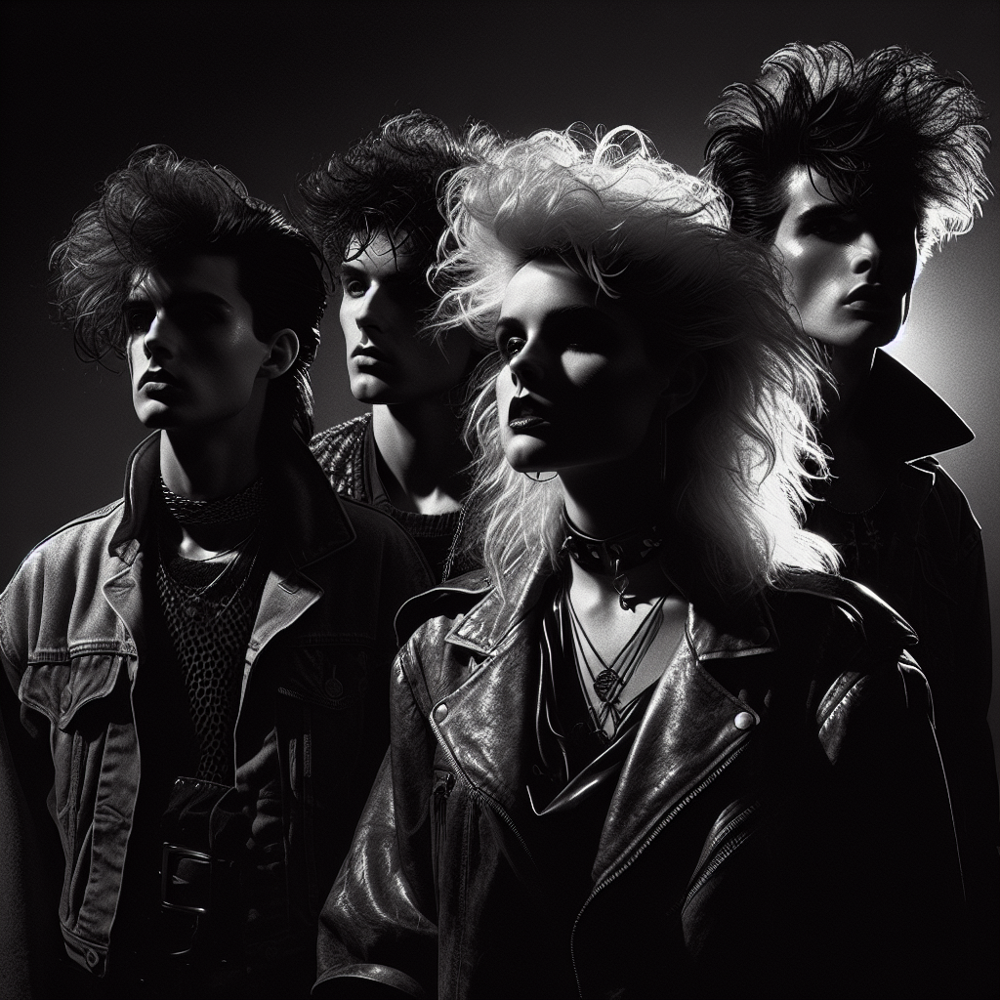

~ The Story ~
In the haunted shadows of 1982 Detroit, where the skyline kissed the edge of the industrial void, Nightshade Vanguard emerged like a siren call echoing through decaying alleyways. A feral alchemy of Darkwave's spectral melancholia and Hip Hop's pulsating urban throb, this unlikely ensemble weaved a tapestry of sound that defied classification.
At the helm was Julian "Shade" Mercer, a storm wrapped in leather and raw conviction. His voice, a baritone steeped in velvet echoes, conjured both the doom of a crumbling metropolis and the defiant hope within its ruins. Shade's command of the mic was magnetic, drawing souls into the band's relentless orbit.
On bass guitar, the enigmatic Cassandra "Cass" Delacroix wielded her instrument like a sculptor carving sound from silence. Her licks slithered through the air, a sinuous thread binding the group's disparate elements with an otherworldly groove. Cass was the oracle, her gaze as piercing as her rhythms.
In the realm of rhythm, Jermaine "Jinx" Carter, deftly managed the drums with a kinetic frenzy that bordered on the chaotic. Each beat he delivered was a heartbeat of the city, capturing its pulse in a rhythmic dance of destruction and rebirth. Jinx's rebellious spirit was the band's fierce heartbeat.
Meanwhile, Vanessa "Spectra" Ruiz commanded the synthesizer with an artisan's touch. She sculpted soundscapes that shimmered like distant planets, transporting listeners to realms beyond. Her ethereal presence was the spectral thread that wove the band's dreamlike narratives together.
Together, Nightshade Vanguard was not just a band, but a living testament to Detroit's gritty elegance — a sonic rebellion that dared listeners to confront beauty in darkness.
~ Band Photo ~

Mgmt: Nightshade Artists Group / Detroit, USA
Julian "Shade" Mercer, Cassandra "Cass" Delacroix, Jermaine "Jinx" Carter, Vanessa "Spectra" Ruiz
~ The Members ~
| Julian "Shade" Mercer | vocals |
| His voice, a baritone steeped in velvet echoes, conjured both the doom of a crumbling metropolis and the defiant hope within its ruins. | |
| Cassandra "Cass" Delacroix | bass guitar |
| Her licks slithered through the air, a sinuous thread binding the group's disparate elements with an otherworldly groove. | |
| Jermaine "Jinx" Carter | drums |
| Each beat he delivered was a heartbeat of the city, capturing its pulse in a rhythmic dance of destruction and rebirth. | |
| Vanessa "Spectra" Ruiz | synthesizer |
| She sculpted soundscapes that shimmered like distant planets, transporting listeners to realms beyond. | |
~ Discography ~
| Shadow Rituals (1982) | |
| |
| Eclipsed Frequencies (1983) | |
| |
| Spectral Harmonies (1984) | |
| |